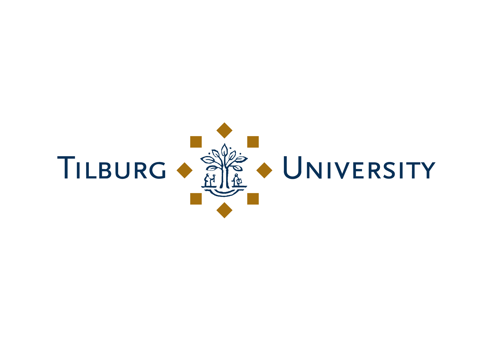

| Home | About | Summit 2025 | Archive | Alumni |
JASEIN (Junior Academics in Strategy Entrepreneurship and Innovation in the Netherlands) is a network for Assistant Professors based in the Netherlands working in the field of strategy, entrepreneurship, and innovation. Our primary goal is to cultivate a vibrant academic network and foster valuable connections among early-career researchers. Beyond the exchange of ideas, the network also embraces a social dimension, providing opportunities for informal interactions and shared experiences that enrich both our academic pursuits and personal sense of belonging in Dutch academia.
The 2nd annual summit of JASEIN (Junior Academics in Strategy, Entrepreneurship, and Innovation in the Netherlands) was held on January 23rd and 24th 2025 at Hotel de Leijhof in Oisterwijk. This year's summit was generously sponsored by the Organization Studies and Strategy & Entrepreneurship departments of Tilburg University. The summit was organized by representatives from UvA, VU, RSM and Groningen, TiU.
The primary objective of JASEIN is to cultivate a vibrant academic network to foster information exchange, stimulate research collaboration, and offer social support to Assistant Professors working in the Netherlands. Thus, staying true to this objective, the summit did not follow the strictly formal format of academic conferences, and was held in an open and supportive environment. The event kicked off with an evening of socializing, the highlight of which was the Tilburg-themed "pub-quiz" that took place over dinner. This was followed the next day with several social and academic activities, which provided the participants useful information for thriving in Dutch academia as well as ample opportunities to interact with their peers.
Highlights included:
Thanks to the efforts of the JASEIN organizing committee and the support of the Strategy and Entrepreneurship department and the Organization Studies department of Tilburg University, the 2nd JASEIN summit was a rousing success. Participants, in their feedback, particularly highlighted the "strong feeling of community" that has resulted from the summit and how it enabled them to "connect with like-minded peers at a similar stage" as them.
The 2025 event is generously sponsored by the departments of Organization Studies and Strategy & Entrepreneurship of Tilburg University.
|  |

|